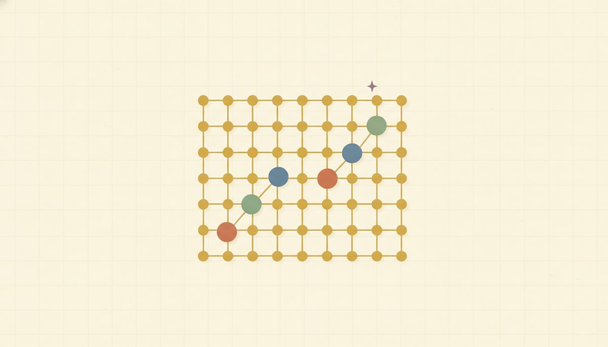

Graphing linear equations from a table

This lesson is the bridge from an equation to its picture. You'll feed an equation a few x-values, get y-values back, plot the pairs, and watch them line up. It also pins down what a solution means once there are two variables: every point on the line is a solution to the equation, and every point off the line is not.
Start with the machine you already know. An equation like y = 2x − 1 is a function machine, the kind from Unit 4: drop in an x, it hands you back a y. In fact y = 2x − 1 and f(x) = 2x − 1 are the same machine with two names. The y is just the output the machine produces. So to graph it, you run a handful of inputs through and collect the outputs.
Put those input-and-output pairs in a table of values, the same input-to-output table from Unit 4, now headed for the grid. Each row is one (x, y) pair, which is one point. Plot the points and they fall in a straight row; draw the line through them.
Hold on to this: the line is all the points that work, not just the four you happened to compute. The four you plotted are a sample; the line is the whole family.
Once the line is drawn, you can ask a sharp question about any point: is it on the line or not? A point is on the line exactly when its coordinates make the equation true.
To test (3, 5) on y = 2x − 1, substitute x = 3 and see what y the equation gives: 2(3) − 1 = 5. The equation says y should be 5, and the point's y is 5, so they agree. The point is on the line. This is the same substitute-and-check habit from solving equations, pointed at a new question.
New words
- 5.2.d1 Table of values: a list of x inputs and their computed y outputs, exactly the input→output table from Unit 4.3, now plotted.
- 5.2.d2 "On the line": a point (a,b) is on the line when its coordinates make the equation true. That is, substituting x=a gives y=b.
Graph y = 2x − 1, then test two points against it: (3, 5) and (3, 4). Work through the table a row at a time, and notice the negative input in the first row. That's the row most likely to bite, so compute it slowly.
| x | 2x-1 | y |
|---|---|---|
| −1 | 2(-1)-1 | −3 |
| 0 | 2(0)-1 | −1 |
| 1 | 2(1)-1 | 1 |
| 2 | 2(2)-1 | 3 |
The points (-1,-3), (0,-1), (1,1), (2,3) fall in a straight line; here's that line, with the y-intercept (0, −1) marked 5.2.f1. Now the two membership tests, each just a substitution:
-
(3,5): 2(3)-1 = 5. Since 5 = 5, the point is on the line. 5.2.w6
-
(3,4): 2(3)-1 = 5, but this point says y = 4. Since 5 ≠ 4, the point is not on the line.
Two things trip people up here. First, "close" doesn't count for membership; it's exact. The substitution either matches or it doesn't, and a point a hair off the line is simply off it. Second, since this is a linear equation, the points are genuinely collinear, so if one plotted point doesn't line up with the others, the move is to recheck that point's arithmetic, not to bend the line to reach it. A wrong table makes a wrong picture, and the negative inputs are the usual culprit.
Check yourself
- 5.2.c1 Without graphing, is (4, 7) on y = 2x - 1? Show how you know. (Substitute x = 4: 2(4) − 1 = 8 − 1 = 7. The equation gives y = 7 and the point's y is 7, so yes, it's on the line.)
- 5.2.c2 Two of these are on y = 3x + 2: (1, 5), (2, 8), (0, 3). Which one isn't, and why? (Test each: 3(1)+2 = 5, matches; 3(2)+2 = 8, matches; 3(0)+2 = 2, but the point says 3, so (0, 3) is the one that isn't on the line.)
- 5.2.c3 If (a, b) is on the line and you change only b, is it still on the line? What does that mean about the point? (No. Keeping x the same but changing y gives a different output than the equation produces, so the new point is off the line. It means each x on the line is paired with exactly one y.)
You can now build a table from a linear equation, plot it into a line, and test any point for membership by substituting and checking whether both sides match.
The problems mix building tables with testing membership. Every answer is at the end of the lesson, and if one stalls you, the worked table above is there to look back at.
Build the table for y = 3x + 2 (problems 1 to 4: find y for each x):
Reveal answerHide to problem 1
3(-1)+2 = -1Reveal answerHide to problem 2
3(0)+2 = 2Reveal answerHide to problem 3
3(1)+2 = 5Reveal answerHide to problem 4
3(2)+2 = 8Build the table for y = -x + 4:
Reveal answerHide to problem 5
-(1)+4 = 3Reveal answerHide to problem 6
-(2)+4 = 2Test membership: